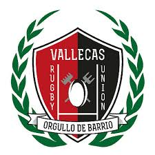
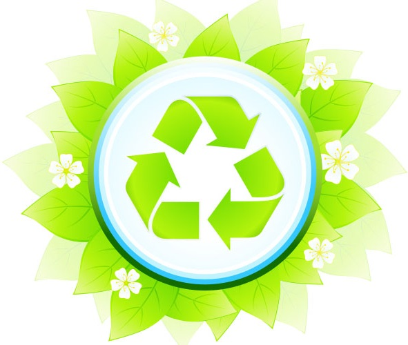

JORGE DE PAZ CABAÑAS
Estudiante de DAM (Desarrollo de Aplicaciones Multiplataforma) en la U-tadCorreo electrónico: jorge.depazcabanas@gmail.com
Telefono: 646461584
Twitter: @_xSoek_
Instagram: jorjito_dpaz
En el mundo de la informatica desde 1999

"EL LIMITE DE LA PROGRAMACION ES TU PROPIA IMAGINACION"
Mi pasión sobre la informática comenzó jugando a videojuegos,
poco a poco me fui interesando mas y mas en como se diseñaban
fue ahi cuando descubri la programación, un nuevo mundo se abrio delante de mi,
donde cualquier cosa que imaginase se podia hacer realidad.
Me encanta la música, me ha ayudado a lo largo de toda mi vida, tanto en
los buenos momentos como en los malos es la una de las formas que yo creo
que te ayudan a desconectar del dia a dia, no hay nada mejor que ponerte unos cascos
y poder concentrarte en lo que estas haciendo.

Soy muy optimista, me gusta ver el lado positivo de las cosas,
y hacer que la gente se contagie de mi positivismo porque estar
alegre es la forma mas saludable de vivir y hace que el ambiente en
un equipo de trabajo sea de los mas satisfactorio para formar parte de él.
VALLECAS RUGBY UNION
Durante el transcurso del curso 2018-2019 se realizó el diseño de la página web para el club deportivo Vallecas Rugby Union utilizando HTML5 y CSS.
Durante el transcurso del curso 2018-2019 se realizó el diseño de la página web para el club deportivo Vallecas Rugby Union utilizando HTML5 y CSS.

RECICLA TU MUNDO (AUN EN PROCESO)
Actualmente estamos desarrollando una aplicación de escritorio relacionada con el reciclaje, concretamente una calculadora de desechos, mas detalles pronto...
Actualmente estamos desarrollando una aplicación de escritorio relacionada con el reciclaje, concretamente una calculadora de desechos, mas detalles pronto...

Pagina Web Empresa (AUN EN PROCESO)
Actualmente estamos desarrollando un diseño web "profesional", mas detalles pronto...
Actualmente estamos desarrollando un diseño web "profesional", mas detalles pronto...
A continuación puedes ver que lenguajes domino y prefiero, como puedes observar tanto Java, como SQL y HTML
son en los que mejor me manejo y luego estaria git y por último C++ el cual aprendi en mi
primer año de estudiar Ingenieria de Computadores.
--------------------------------------------------------
También sé utilizar herramientas como Alice, Scratch, AppInventor, las cuales comence a aprender para introducirme en el mundo de la programación de manera mas interactiva
--------------------------------------------------------
También sé utilizar herramientas como Alice, Scratch, AppInventor, las cuales comence a aprender para introducirme en el mundo de la programación de manera mas interactiva
JAVA
SQL
HTML/CSS/BOOTSTRAP
C++
GIT